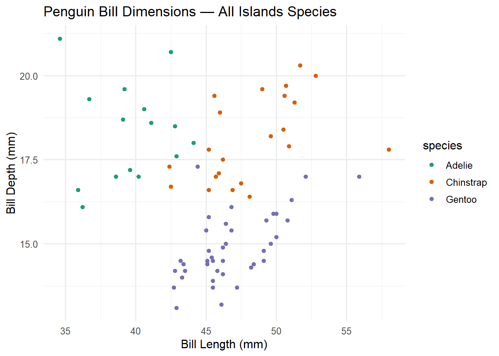
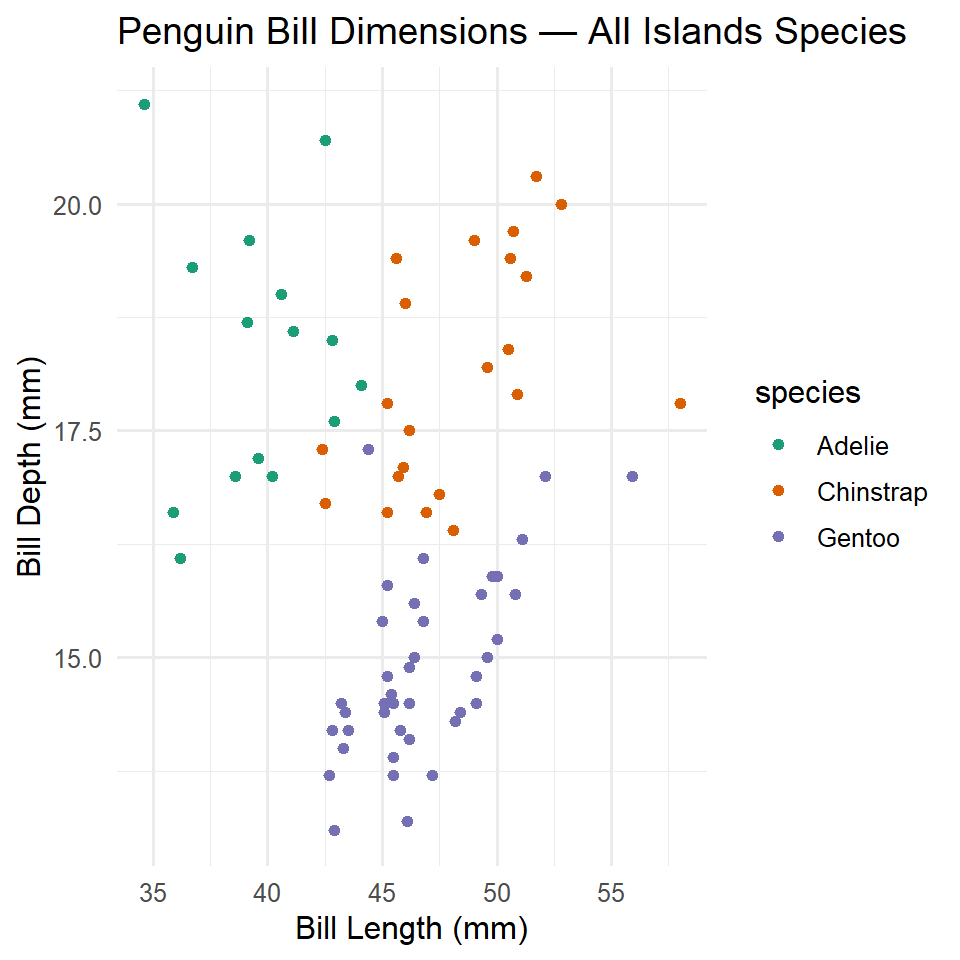

Show the code
library(tidyverse)To analyse the relationship between the bill length and bill depth of the penguins that live in three different islands, I made a scatterplot that plots two of the variables with color verification of three types of species.
Data I used for this analysis is retreived from palmerpenguins
Start off with loading tidyverse and get started!
library(tidyverse)Data is cleaned by identifying and excluding the observations that have no values.
# Source functions
source(file="functions.R")
# Read the clean dataset
data <- readRDS(file = "C:/Users/shior/OneDrive/Desktop/productive-r-workflow/input/clean_data.rds")I plotted the cleaned data to a scatterplot of R to demonstrate the correlation between the length and depth of penguin bills.

library(dplyr)
library(ggplot2)
species_colors <- c(
"Adelie" = "#1b9e77",
"Chinstrap" = "#d95f02",
"Gentoo" = "#7570b3"
)
create_scatterplot <- function(data, selected_species, selected_island, show_legend = TRUE) {
# Filter the data for the specified species and island
filtered_data <- data %>%
na.omit() %>%
filter(species == selected_species, island == selected_island)
# Create the scatterplot
plot <- ggplot(
filtered_data,
aes(x = bill_length_mm, y = bill_depth_mm, color = species)
) +
geom_point() +
scale_color_manual(values = species_colors) +
labs(
x = "Bill Length (mm)",
y = "Bill Depth (mm)",
title = paste("Penguin Bill Dimensions — All Islands", color = "Species")
) +
theme_minimal(base_size = 12) +
theme(legend.position = if (show_legend) "right" else "none")
return(plot)
}
# Use the function
create_scatterplot(data, c("Adelie","Chinstrap", "Gentoo"), c("Torgersen","Dream", "Biscoe"))Warning: There were 2 warnings in `filter()`.
The first warning was:
ℹ In argument: `species == selected_species`.
Caused by warning in `species == selected_species`:
! longer object length is not a multiple of shorter object length
ℹ Run `dplyr::last_dplyr_warnings()` to see the 1 remaining warning.
Let’s delve into the data to compare the differences among 3 species!
#Compute the average bill length and bill depth per species
#| layout-ncol: 2
library(dplyr)
data %>%
group_by(species) %>%
summarise(average_bill_length = mean(bill_length_mm, na.rm = TRUE), average_bill_depth = mean(bill_depth_mm, na.rm = TRUE))# A tibble: 3 × 3
species average_bill_length average_bill_depth
<chr> <dbl> <dbl>
1 Adelie 38.8 18.3
2 Chinstrap 48.8 18.4
3 Gentoo 47.5 15.0library(patchwork)
library(ggplot2)
p1 <- create_scatterplot(data, "Adelie", c("Torgersen","Dream", "Biscoe"), show_legend = FALSE) + labs(title = NULL)
p2 <- create_scatterplot(data, "Chinstrap", c("Torgersen","Dream", "Biscoe"), show_legend = FALSE) + labs(title = NULL)
p3 <- create_scatterplot(data, "Gentoo", c("Torgersen","Dream", "Biscoe"), show_legend = FALSE) + labs(title = NULL)
p1 + p2 + p3 + plot_annotation(title = "Penguin Bill Dimensions by Species")